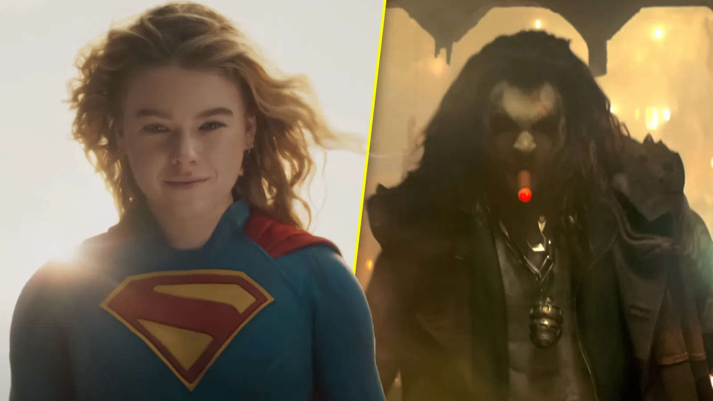

Note : 3/5
Un bon divertissement, porté par un casting au top. Mais freiné par des personnages secondaires sous-exploités et un méchant trop fade.
⚠️ Attention : cette critique contient des éléments sur l'intrigue du film Supergirl.
Synopsis
Librement adapté du comics de Tom King Supergirl: Woman of Tomorrow, le film suit Kara Zor-El (Milly Alcock), cousine cynique et portée sur la boisson de Clark Kent/Superman, le jour de ses 23 ans. En pleine fête sous le ciel d'une planète à soleil rouge, Kara croise la route de Ruthye (Eve Ridley), une jeune fille innocente mais animée par une soif de vengeance envers Krem (Matthias Schoenaerts), le chef impitoyable des Brigands. Quand Krem empoisonne Krypto, le chien de Superman, Kara et Ruthye se retrouvent forcées de faire équipe pour un road trip intergalactique : venger les parents de Ruthye d'un côté, trouver un remède pour Krypto de l'autre. En chemin, Kara va devoir affronter son passé et trouver sa véritable place de protectrice.
Un acting solide, une histoire qui reste sage
Très bon film dans l'ensemble, l'acting est bon, l'histoire est assez normale donc elle n'est pas incroyable ni mauvaise. Certains plans sont un peu mal incrustés, je vois du fond vert par moments mais ça n'est pas si dérangeant.
Supergirl et Lobo, le duo qui porte le film
Au delà de ça, les personnages sont sympas, Supergirl et Lobo sont tellement réussis. Milly Alcock est convaincante sur le film, elle porte le personnage à merveille, et Lobo est tout aussi excellent. Le méchant lui n'est pas incroyable et est vite oubliable, il manque cette animosité et cette menace envers Supergirl. D'ailleurs au final elle le one shot presque, donc la tension ne joue jamais vraiment en sa faveur.

Des personnages excellents mais inutiles à l'histoire
Et c'est bien dommage justement, parce que des personnages comme Lobo ou la petite fille qui accompagne Supergirl ne servent quasiment à rien dans l'histoire. J'ai trouvé le film loupé sur ce point précis : on a des personnages forts à l'écran, bien interprétés, mais qui n'apportent rien à la progression du récit. Ça donne l'impression d'un film qui ne sait pas trop quoi faire de son propre casting.
Krypto et une tension qui ne prend jamais
L'histoire autour de Krypto est bonne mais reste très simple, on sait dès le départ qu'il ne va pas mourir, donc la tension ne joue pas vraiment dans le film. Le système du temps d'empoisonnement censé créer l'urgence n'est pas convaincant non plus, il manque de poids dans sa mise en place.
Un rythme qui se perd entre flashback et action
Les moments d'histoire en flashback sont bien mis en scène, le lore s'agrandit et se perfectionne, et voir Superman n'est pas déplaisant, c'est même mignon de le voir prendre son rôle familial à cœur. Le rythme reste correct dans l'ensemble, mais je trouve que ça se perd un peu entre les flashbacks et les scènes d'action. J'avais l'impression que le film ne voulait pas nous perdre avec trop de dialogue et de construction de personnage, du coup ça hésite entre les deux sans vraiment trancher.

Une photographie excellente, dans la continuité de Superman (2025)
Les couleurs sont dans la lignée de Superman (2025), c'est du grand art, les plans dans l'espace sont excellents. C'est beau visuellement, c'est coloré, et ça confirme que le DCU de James Gunn a une vraie identité visuelle cohérente d'un film à l'autre.
Un spin-off qui pose les bases de Man of Tomorrow
Le film se présente comme un spin-off, une histoire à côté de la grande intrigue de cet univers. Pour la suite, ça instaure une bonne base pour Man of Tomorrow, le prochain film Superman : Kara s'installe sur Terre définitivement avec Krypto et choisit d'être une héroïne à part entière.
Un héroïsme présent, mais qui reste dans l'ombre de Superman
Le côté héroïsme est présent dans chaque partie du film, même au début, alors qu'on nous présente Kara comme l'inverse de Superman : bourrée, fêtarde, avec l'envie de voyager loin de tout. C'est un côté que j'aime beaucoup, cette sensation de voir une héroïne grandir et accepter son destin, c'est exactement ce que j'aime dans les films de super-héros.
Superman avait quand même une meilleure approche de l'héroïsme, une version plus profonde et plus juste. Supergirl a une bonne base héroïque mais ne se démarque pas vraiment, ça reste dans la normalité du genre.
Des OST sympathiques mais pas marquantes
Les musiques ne sont pas marquantes, c'est sympa et bien choisi sur le moment, mais aucune ne marque vraiment les esprits comparé à son prédécesseur Superman (2025).
Le vrai point fort : l'action
Par contre je ne comprends pas comment ce film peut flop au box-office. Le gros point fort du film c'est clairement les scènes d'action et les quelques plans-séquences vraiment convaincants. C'est là que le film prend tout son sens et justifie sa place dans le DCU.
Conclusion
Un bon divertissement avec un beau casting, mais qui reste en dessous de son prédécesseur, freiné par des personnages secondaires sous-exploités et un méchant qui ne pèse jamais vraiment. Une bonne base pour la suite du DCU, sans pour autant marquer les esprits.